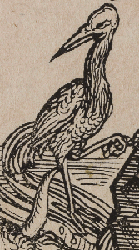
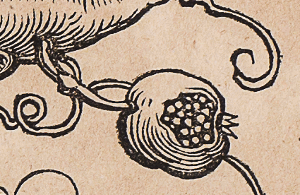

<!DOCTYPE html>
<html lang="en">

 <head>
  <meta charset="utf-8" />
  <meta name="DC.creator" content="Ruven Pillay &lt;ruven@users.sourceforge.netm&gt;"/>
  <meta name="DC.title" content="IIPMooViewer 2.0: HTML5 High Resolution Image Viewer"/>
  <meta name="DC.subject" content="IIPMooViewer; IIPImage; Visualization; HTML5; Ajax; High Resolution; Internet Imaging Protocol; IIP"/>
  <meta name="DC.description" content="IIPMooViewer is an advanced javascript HTML5 image viewer for streaming high resolution scientific images"/>
  <meta name="DC.rights" content="Copyright &copy; 2003-2012 Ruven Pillay"/>
  <meta name="DC.source" content="http://iipimage.sourceforge.net"/>
  <meta name="viewport" content="width=device-width, initial-scale=1.0, maximum-scale=1.0, user-scalable=0" />
  <meta name="apple-mobile-web-app-capable" content="yes" />
  <meta name="apple-mobile-web-app-status-bar-style" content="black-translucent" />
  <meta http-equiv="X-UA-Compatible" content="IE=9" />

  <link rel="stylesheet" type="text/css" media="all" href="css/iip.min.css" />
  <link rel="stylesheet" type="text/css" media="all" href="css/smk.css" />   
  
<!--[if lt IE 10]>
  <meta http-equiv="X-UA-Compatible" content="IE=9" >
  <link rel="stylesheet" type="text/css" media="all" href="css/ie.min.css" />
<![endif]-->

  <!-- Basic example style for a 100% view -->
  <style type="text/css">
    body{
      height: 100%;
      padding: 0;
      margin: 0;
    }
    div#viewer{
      height: 100%;
      min-height: 100%;
      width: 100%;
      position: absolute;
      top: 0;
      left: 0;
      margin: 0;
      padding: 0;
    }	
  </style>

  <link rel="shortcut icon" href="images/smk-favicon.png" />
  <link rel="apple-touch-icon" href="images/smk.png" />

  <title>SMK | A.D&uuml;rer - Kejser Mamilian den 1.'s &aelig;resport</title>  

  <script type="text/javascript" src="js/mootools-core-1.5.1-full-nocompat-yc.js"></script>
  
  
  <script type="text/javascript" src="src/smk-mootools-more-1.5.1.js"></script>
  
  <script src="//ajax.googleapis.com/ajax/libs/jquery/1.9.1/jquery.min.js"></script>
  <script src="http://ajax.googleapis.com/ajax/libs/jqueryui/1.9.2/jquery-ui.min.js"></script>
  <script>var $jq = jQuery.noConflict();</script>
  
  <script type="text/javascript" src="src/smk-iipmooviewer-2.0.js"></script>
  <script type="text/javascript" src="src/navigation.js"></script>
  <script type="text/javascript" src="src/scale.js"></script>
  <script type="text/javascript" src="src/touch.js"></script>
  <script type="text/javascript" src="src/protocols/iip.js"></script>
  <script type="text/javascript" src="src/smk-annotations.js"></script>
  <script type="text/javascript" src="src/blending.js"></script>
  <script type="text/javascript" src="src/lang/help.en.js"></script>
  
<!--[if lt IE 7]>
  <script src="http://ie7-js.googlecode.com/svn/version/2.1(beta4)/IE7.js">IE7_PNG_SUFFIX = ".png";</script>
<![endif]-->

  <script type="text/javascript">

    // IIPMooViewer options: See documentation at http://iipimage.sourceforge.net for more details
    // Server path: set if not using default path
    var image = '/var/www/fcgi-images-original/KKSgb9840_512_pyr-v2.tif';
    var server = '/iipsrv/iipsrv.fcgi';
    
    // Copyright or information message    
    var credit = "G&aring; p&aring; opdagelse i v&aelig;rket: Zoom ind og find de skjulte detaljer!<p><i>For yderligere information om zoom funktionaliteter, h&oslash;jre-klik p&aring; billeden.</i></p>";

    var annotations = {
        1: { x: 0.36, y: 0.01, w: 0.30, h: 0.21, text: "<div style='width:300px;padding:1em'><h1>Trane</h1> Tranen her holder en sten i sin l&oslash;ftede klo og henviser til kejserens &aring;rv&aring;genhed. N&aring;r tranen er ved at falde i s&oslash;vn, taber den stenen i kloen og v&aring;gner straks op.</div>"},
	      2: { x: 0.01, y: 0.28, w: 0.21, h: 0.1, text: "<div style='width:300px;padding:1em'><h1>Delfiner</h1> Ved f&oslash;dderne af to vogtere ser man to m&aelig;rkv&aelig;rdige delfiner. Delfinerne bliver ikke forklaret i nogen af de tekster, man kan l&aelig;se p&aring; v&aelig;rket &ndash; og det er i dag  uvist, om de skal symbolisere noget.</div>"},                
        3: { x: 0.01, y: 0.39, w: 0.25, h: 0.15, text: "<div style='width:300px;padding:1em'><h1>Historiescene</h1> I denne scene hyldes kejseren for den h&aelig;derlighed og ridderlighed, som Gud har sk&aelig;nket ham. I verset st&aring;r: <blockquote>Gud har vist ham sin n&aring;de / For han var tilb&oslash;jelig til fromhed / Dygtig til ridderlige lege / Og &oslash;nskede det i sit hjerte / Fra sin tidlige ungdom / Og voksede i ridderlighed med stor dyd.</blockquote></div>"},
        4: { x: 0.27, y: 0.34, w: 0.21, h: 0.15, text: "<div style='width:300px;padding:1em'><h1>C&aelig;ser</h1> Her ses den romerske kejser Julius C&aelig;sar, som Maximilian gerne ville associeres med. Sammen med ham ses to andre ber&oslash;mte, romerske kejsere:  Augustus og  Tiberius.</div>"},
        5: { x: 0.37, y: 0.50, w: 0.27, h: 0.15, text: "<div style='width:300px;padding:1em'><h1>Granat&aelig;ble</h1> Granat&aelig;bler ses flere steder i &aelig;resporten. I teksten nederst i v&aelig;rket st&aring;r der, at kejseren valgte granat&aelig;blet som symbol, fordi det &ndash; ligesom ham selv &ndash; ikke var s&aelig;rligt  attraktivt udenp&aring;, men smukt indeni og fyldt med velformede, frugtbare kerner.</div>"},
        6: { x: 0.52, y: 0.66, w: 0.26, h: 0.17, text: "<div style='width:300px;padding:1em'><h1>L&aelig;nkede sirener</h1> Sirener er forf&oslash;rende kvinder med fiskehaler fra gr&aelig;sk mytologi. De lokker s&oslash;m&aelig;nd i ford&aelig;rv med deres sang. Her er de l&aelig;nket til s&oslash;jlerne. De er dermed under kontrol og kan ikke skade dem, der g&aring;r igennem &aelig;resporten.</div>"},           
};    

   // Create our viewer object
    // See documentation for more details of options
    new IIPMooViewer( "viewer", {

  
  	image: image,
		server: server,
		credit: credit, 
		scale: 7.17,
		showNavWindow: false,
		showNavButtons: true,
		winResize: true,
		protocol: 'iip',
	  annotations: annotations,
    navWinSize : 0.07     
  
    });

  </script>

 </head>

 <body>
   <div id="viewer"></div>
 </body>

</html>
